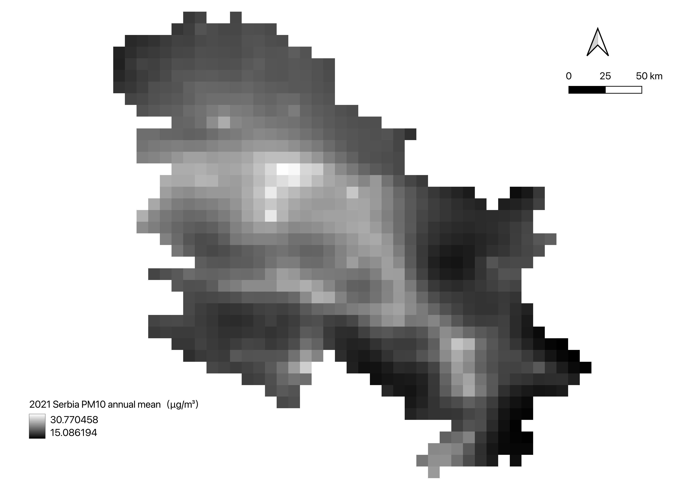
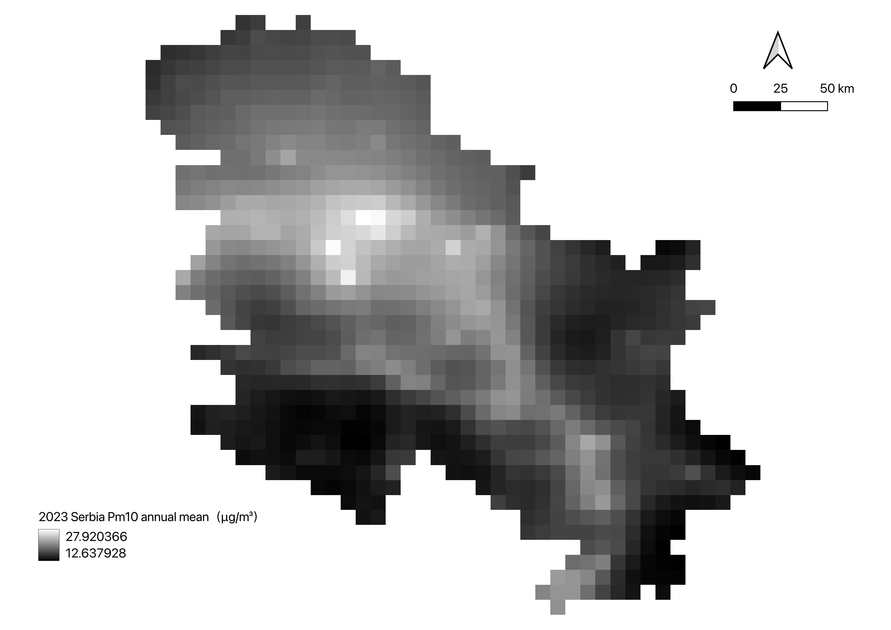
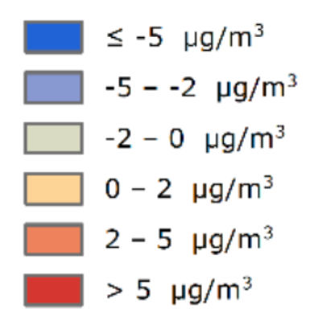
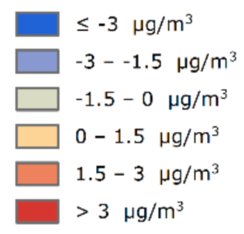
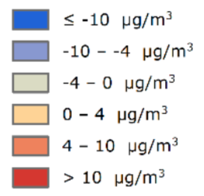
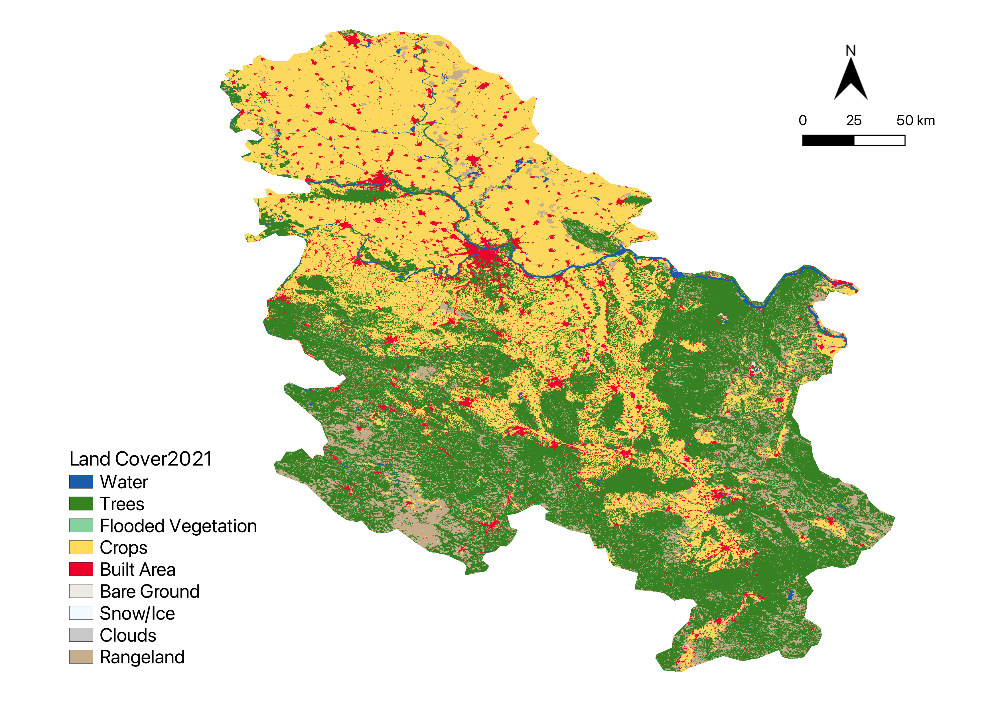

Data Collection
We collected multi-source geospatial datasets, including CAMS air quality rasters for PM10, PM2.5 and NO₂, ESRI 10 m Annual Land Cover data for 2021 and 2023, WorldPop population data and the Serbia national boundary.
Step-by-step methodology for analysing air pollution change, land cover transition and population exposure in Serbia.
This project focuses on three major air pollutants in Serbia: PM10, PM2.5 and NO₂. These pollutants were analysed to examine their spatial distribution, annual concentration patterns, changes between 2021 and 2023, and their relationship with population exposure.
A gaseous pollutant mainly associated with traffic emissions, combustion processes and industrial activities.
Fine particulate matter with a diameter of 2.5 μm or less, important for exposure analysis because it can remain suspended in the air for longer periods.
Coarse particulate matter with a diameter of 10 μm or less, commonly related to dust, traffic, construction and industrial activities.
Our workflow combines CAMS air quality data for PM10, PM2.5 and NO₂, ESRI Land Cover data, WorldPop population data and the Serbian national boundary to analyse air pollution, land cover change and population exposure in Serbia.
We collected multi-source geospatial datasets, including CAMS air quality rasters for PM10, PM2.5 and NO₂, ESRI 10 m Annual Land Cover data for 2021 and 2023, WorldPop population data and the Serbia national boundary.
All datasets were prepared before analysis by standardizing their coordinate reference system, clipping them to the Serbian national boundary and aligning their spatial extent. Special attention was given to NoData handling: pixels outside Serbia, invalid raster cells and missing values were excluded from later raster calculations and statistical analysis. This preprocessing ensured that CAMS pollution rasters, ESRI Land Cover layers, WorldPop population data and vector boundaries could be correctly overlaid, compared and combined in the following workflow steps.
Monthly CAMS pollutant layers were processed to generate annual and monthly raster products for PM10, PM2.5 and NO₂. These prepared layers provided the basis for concentration mapping and subsequent change detection analysis.



The 2023 PM10 concentration map shows the spatial distribution of particulate matter across Serbia. Higher concentration levels are mainly concentrated in specific parts of the country, while lower values appear in less affected areas. This map provides a baseline for identifying PM10 pollution hotspots and supports the subsequent 2021–2023 change detection analysis.
The 2021 and 2023 annual mean pollutant layers were compared to detect spatial changes in air pollution levels. The Annual Mean Air Concentration Change (AMAC) was calculated by subtracting the 2021 annual mean concentration from the 2023 annual mean concentration. The resulting raster was then reclassified using pollutant-specific thresholds for NO₂, PM2.5 and PM10.
Based on this workflow, the AMAC rasters were reclassified into pollutant-specific change categories. The maps below show the resulting reclassification outputs for NO₂, PM2.5 and PM10.



Land cover change was detected by combining the 2021 and 2023 land cover layers into a transition code raster. The transition codes were then reclassified into stable, gain and loss categories. To calculate land cover change area accurately, the transition raster was reprojected to the equal-area projection EPSG:3035 before pixel-based area calculation. This ensured that each pixel represented a consistent ground area and reduced area distortion compared with geographic coordinates.

The transition code records both the original 2021 land cover class and the resulting 2023 class in a single raster value. The first part of the code represents the 2021 class, while the last two digits represent the 2023 class. This makes it possible to distinguish unchanged areas from land cover gains and losses during reclassification.
| Example Code | Meaning |
|---|---|
| 101 | Class 1 remained Class 1 |
| 102 | Class 1 changed to Class 2 |
| 502 | Class 5 changed to Class 2 |
| 1102 | Class 11 changed to Class 2 |
Population exposure was assessed at GAUL Level 2 administrative zones. Zonal statistics were used to extract the median population class and the maximum pollutant concentration class for each zone. These values were then combined as pol_class_max × 10 + pop_class_median to produce the bivariate exposure layer.
 5 population classes
5 population classes
Final raster and vector outputs were published in GeoServer as WMS/WFS layers and styled using SLD-based symbology to ensure consistent visual representation across all pollutant and exposure layers.
The WebGIS was built using OpenLayers and includes three switchable base maps (OpenStreetMap, ESRI Topographic, ESRI World Imagery), a layer switcher for toggling thematic overlays, and standard map controls including Scale Line, Full Screen, Mouse Position and Overview Map.
A dynamic legend panel was implemented to automatically update based on the active layer, and a GetFeatureInfo popup allows users to query attribute values by clicking directly on the map. All layers are served via WMS from the Politecnico di Milano GeoServer instance.
{kind=link}
{kind=link}
{kind=link}
{kind=link}
{kind=link}
{kind=link}
{kind=link}
{kind=link}
{kind=link}